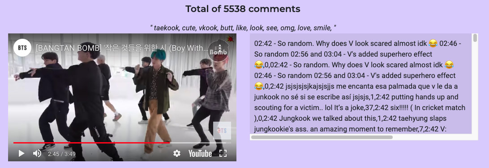
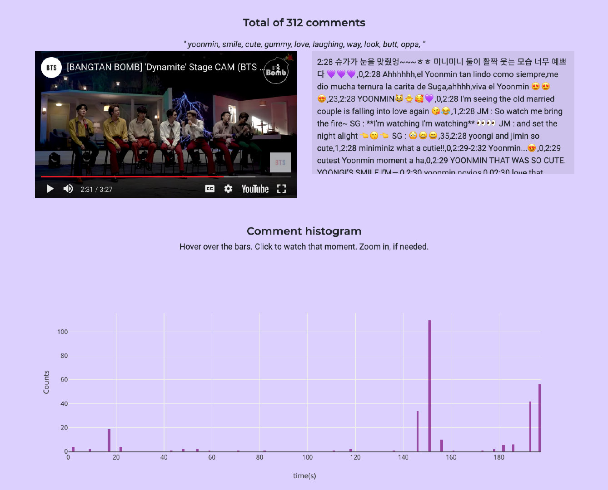
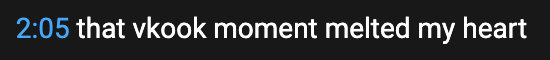
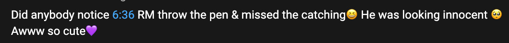
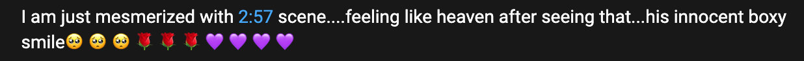
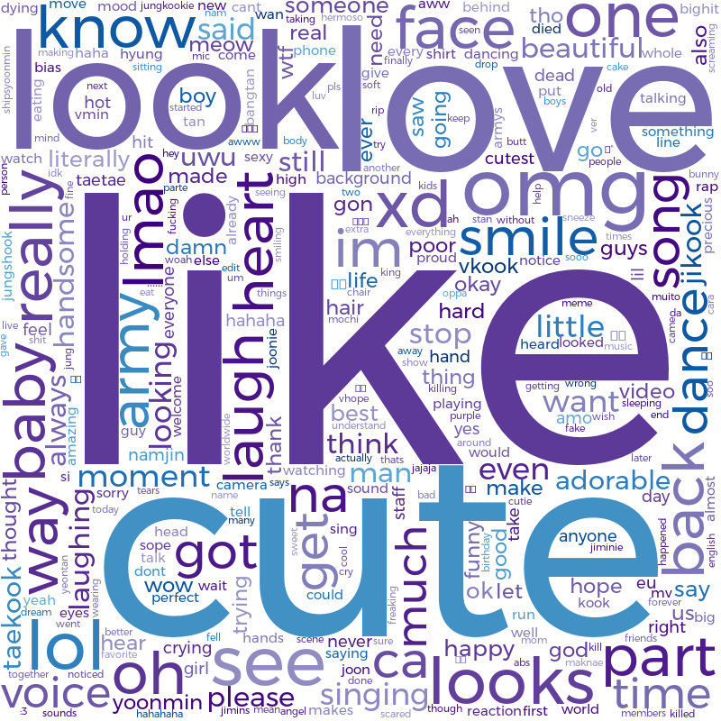

NOTE: It takes a while to wake up the sleeping heroku server The website is here 
(Only because I am proud of myself..)
As the video plays, comments that correspond to that time will appear in the box on the right
Comment histogram shows where are the highlights of that video (based on number of comments)
If you click on the bar in the comment histogram, it will take you to that part in that video.

When there are interesting moments in a youtube video, users comment by indicating the specific time frame.
  
To me, this kind of comments look like valuable data. Specifically, I thought it would be great to use it for building a video highlight detection system. I decided to analyze BTS videos and ARMY’s comments on Youtube.
Some motivation and ideas of this project were
All videos are from official BTS channels (BANGTANTV and Big Hit Labels). I collected videos from 3 playlists: BTS festa, BTS episode, and Bangtan Bomb.
Data collection process is as following:
I also wanted to include the official music videos, but each video had several thousand pages of comments, which quickly used up all my daily quotas of google API calls :’P
Some data statistics
####
“Cute” and “funny” are the most mentioned words.
Popular scenes are mostly about members being funny and raw, which is in contrast to their charismatic stage performances. It’s probably because people like to see others smile, laugh, have fun with each other and care for each other. In fact, many fans (including myself) say BTS brings joy in their life. I watch BTS videos, if I feel sad and stressed.
Here are some funny moments I found.
Playful BTS
반전 매력 (Translates to unexpected charm..?)
Being professional
Accidents
Members doing something together (caring for each other, making fun of each other)

I used vaderSentiment library to compute sentiment of all the comments collected. Non-english comments were translated to English.
The sentiment score ranges from -1.0 to 1.0, referring to negative and positive, respectively. However, negative sentiment does not mean comments are bad. For example, if the comment is along the line of “crying because Suga” or “I am dying from cuteness 😭😭😭”, then this will be computed as negative.
Also, this vaderSentiment library is trained on social media data, such as tweets and Rotten Tomato movie reviews. Positiviity bias (Human language reveals a universal positivity bias may be why there are so many comments scoring ~0.23.
p.s. Might be a bit slow on load, since Heroku keeps unvisited sites dormant after a while.
My favorite quote these days from RM
“마음먹은 대로 살되 마음대로는 살지 않겠다”